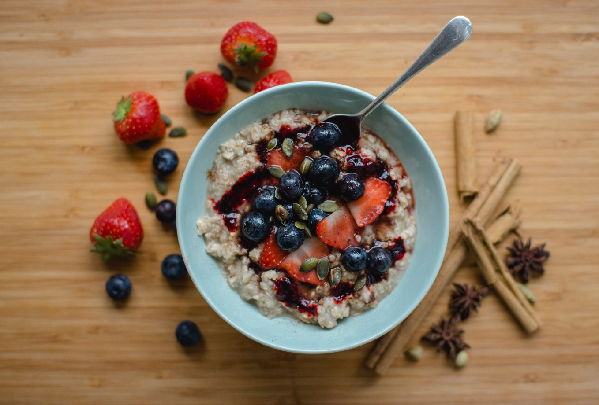

Crockpot Viking Stew

Description
This immune boosting breakfast provides the fibre beta glucan,
believed to enhance the body’s resistance to viral and bacterial pathogens.
Elderberries are packed with antioxidants and used therapeutically to relieve sinus
pain and flu type symptoms. Pumpkin seeds are an important source of dietary zinc,
an immune-enhancing mineral that has been found to shorten the duration of the common
cold.
Ingredients
- 1 cup of milk
- 2 tbsp of coconut flour
- 2 tablespoons chia seeds
- 2 tablespoons flax meal
- dried elderberries - 140g
- water - 800ml
- 2 star anise
- 1 cinnamon stick
- 4 cardamom pods
- 5 tbsp maple syrup
- pumpkin seeds -30g
Steps
- Place the dried elderberries in cold water to rehydrate overnight.
- The next day put the berries in a saucepan with the other syrup ingredients
(apart from the maple syrup). Bring to a boil then simmer for 30 minutes.
Remove the pan from the heat,
crush the berries with the back of a spoon to extract any remaining flesh.
- Sieve the mixture into a sterilised jar.
The syrup can be stored in the fridge for up to 2 months.
- Soak the oats overnight in water. In the morning put the oats in a pan and add 100ml
of oat milk and the 200ml of water. Heat gently, stirring until the oats are cooked
through.
You may want to adjust the amount of milk/water depending on how thick you like your
porridge.
- To serve, pour the porridge into a warmed bowl, swirl on the elderberry
syrup and top with pumpkin seeds.
Add a handful of fresh berries to boost the antioxidant load.
-
Porridge not your thing? Dilute the syrup in warm water for a
soothing drink.
Notes
Elderberries are in season from August-October . Frozen or fresh can be used (reduce water quantities),
alternatively dried elderberries can be purchased from
specialist food shops or online.
Nutrition